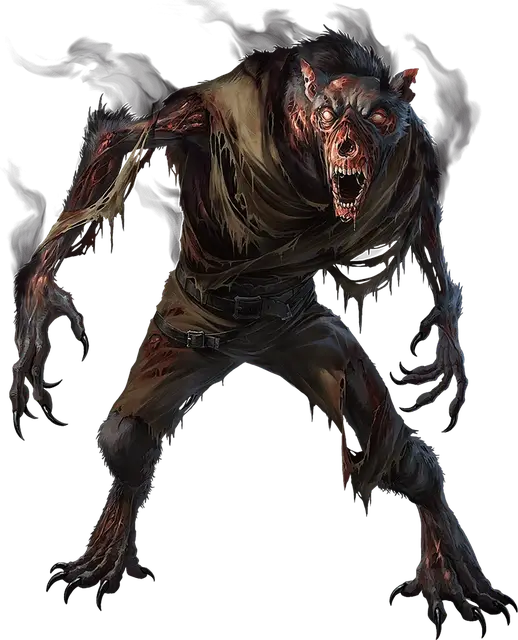

Смертоволк
Deathwolf
Средняя Нежить, обычно хаотично-злая

Класс Доспеха 15 (природный доспех)
Хиты 153 (18к8 + 72)
Скорость 40 футов
| мод | спас | ||
|---|---|---|---|
| СИЛ | 20 | +5 | +10 |
| ЛОВ | 16 | +3 | +8 |
| ТЕЛ | 18 | +4 | +4 |
| мод | спас | ||
|---|---|---|---|
| ИНТ | 10 | +0 | +0 |
| МДР | 17 | +3 | +3 |
| ХАР | 19 | +4 | +9 |
Навыки Восприятие +13, Скрытность +8
Сопротивление урону яд; дробящий, колющий, рубящий от немагических атак, кроме нанесённых посеребрённым оружием
Иммунитет к состояниям испуг, истощение, отравление, очарование
Чувства тёмное зрение 60 футов, пассивное Восприятие 23
Языки Общий
Опасность 15 (13000 опыта)
Бонус мастерства +5
Особенности
Легендарное сопротивление (2/день). Если смертоволк проваливает спасбросок, он может вместо этого сделать спасбросок успешным.
Лунное изящество. Смертоволк падает со скоростью 60 футов в раунд, не получая урона от падения.
Действия
Мультиатака. Смертоволк совершает одну атаку Укусом и две атаки Когтями. Он может заменить любую из этих атак применением Фантомного смертоволка, если это возможно.
Укус. Рукопашная атака оружием: +10 к попаданию, досягаемость 5 футов, одна цель. Попадание: 14 (2к8 + 5) колющего урона плюс 9 (2к8) урона некротической энергией. Цель должна преуспеть в спасброске Мудрости Сл 16, при провале совершая спасброски против испуга с помехой. Это проклятие длится до тех пор, пока не будет снято заклинанием снятие проклятия [remove curse] или другой магией.
Когти. Рукопашная атака оружием: +10 к попаданию, досягаемость 5 футов, одна цель. Попадание: 12 (2к6 + 5) рубящего урона плюс 4 (1к8) урона некротической энергией.
Фантомный смертоволк (перезарядка 5-6). Смертоволк создает пугающего фантома-двойника в рассудке видимого им существа в пределах 60 футов от смертоволка. Цель должна преуспеть в спасброске Интеллекта Сл 17, иначе становится испуганной на 1 минуту.
Пока цель испугана таким образом, фантом наносит ей 21 (6к6) урона психической энергией в начале каждого её хода. Испуганная цель может повторять спасбросок в конце каждого своего хода, оканчивая на себе эффект при успехе.
Реакции
Смертоволк может совершать до двух реакций в раунд, но только одну реакцию в ход.
Внушающий разрез. Когда существо в пределах 5 футов от смертоволка совершает по нему бросок атаки, смертоволк заставляет его совершить спасбросок Мудрости Сл 17, при провале совершая спасброски против испуга с помехой. После того, как атака попала или промахнулась, смертоволк совершает одну атаку Когтями против этого существа.
Фазовый отскок. Получив урон, смертоволк телепортируется на расстояние вплоть до 30 футов в видимое ему незанятое пространство, находящееся в области тьмы или тусклого света.
Описание
Смертоволк сочетает в себе мощь оборотня, крамольную силу смерти и магию полной луны. Они наиболее распространены на Кринне, но иногда встречаются и в других местах, где есть ликантропия и некромантия.
Чтобы создать смертоволка, некромант оживляет тело могущественного оборотня, проводя оскверняющий ритуал, подпитываемый лунной магией. В результате получается мерзкая Нежить, напоминающая скелетного, теневого оборотня в гибридной форме. Смертоволки не могут превращаться, но способны создавать опасные иллюзии. Укус смертоволка делает жертву более восприимчивой к искажающим разум фантомам, которых он может создавать.
Смертоволки в Саге о Копье
В мире Кринн смертоволки связаны с Лунитари, красной луной Кринна и богиней нейтральной магии. Богиня Лунитари — фокусница и мастерица иллюзий, поэтому некроманты проводят ритуал создания смертоволка под светом ее луны, чтобы наделить его способностями к иллюзиям и обману.